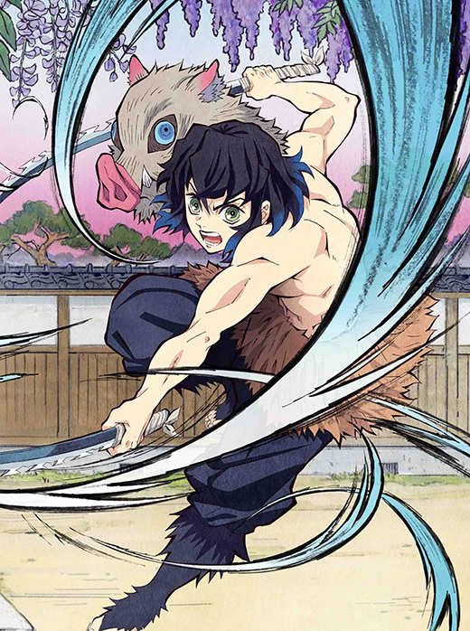
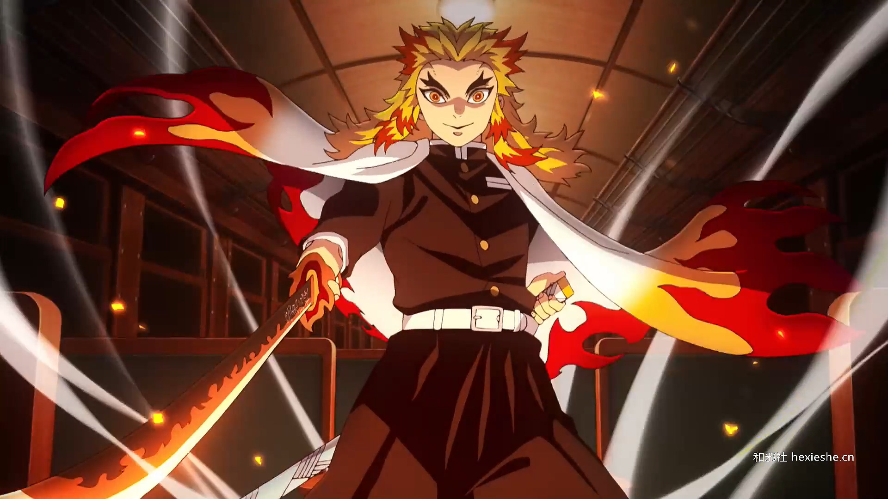

水之呼吸
鬼滅之刃播放到現在，水之呼吸十型已經全部展現出來了。作為以變化為主的水之呼吸，有着藍白色的特效， 漂亮至極。並且能夠根據不同的場景需求，使出不同的型來加以應對。

雷之呼吸
鬼滅之刃播放到現在，水之呼吸十型已經全部展現出來了。作為以變化為主的水之呼吸，有着藍白色的特效， 漂亮至極。與眾隊員前往那田蜘蛛山上討伐鬼，但走到一半就聽到了奇怪聲響，接著隊員們就開始互相殘殺，之後撐到炭治郎等人前來後，是少數沒被蜘蛛絲控制且活下的人 在遇到炭治郎時毫髮無傷，並且吐槽了炭治郎的級別太低，需要更強的人才能解決蜘蛛鬼，後被伊之助揍了一拳無傷成就解除 後遵照炭治郎的期望努力戰鬥著，並且表示會在此應付攻擊，讓炭治郎與伊之助先前往斬殺操縱絲線的鬼。其後被蜘蛛鬼·姐姐的血鬼術·溶解之繭奇襲，因來不及反應而快速包覆，衣服被裡面的酸液所溶化，後被蟲柱胡蝶忍所救。 事件結束後被招集至柱合會議說明情況，結束後探望了炭治郎等人，並表示了柱給人的感覺非常可怕。並且能夠根據不同的場景需求，使出不同的型來加以應對。
獸之呼吸
鬼滅之刃播放到現在，水之呼吸十型已經全部展現出來了。作為以變化為主的水之呼吸，有着藍白色的特效， 漂亮至極。並且能夠根據不同的場景需求，使出不同的型來與眾隊員前往那田蜘蛛山上討伐鬼，但走到一半就聽到了奇怪聲響，接著隊員們就開始互相殘殺，之後撐到炭治郎等人前來後，是少數沒被蜘蛛絲控制且活下的人 在遇到炭治郎時毫髮無傷，並且吐槽了炭治郎的級別太低，需要更強的人才能解決蜘蛛鬼，後被伊之助揍了一拳無傷成就解除 後遵照炭治郎的期望努力戰鬥著，並且表示會在此應付攻擊，讓炭治郎與伊之助先前往斬殺操縱絲線的鬼。其後被蜘蛛鬼·姐姐的血鬼術·溶解之繭奇襲，因來不及反應而快速包覆，衣服被裡面的酸液所溶化，後被蟲柱胡蝶忍所救。 事件結束後被招集至柱合會議說明情況，結束後探望了炭治郎等人，並表示了柱給人的感覺非常可怕。加以應對。
炎之呼吸
鬼滅之刃播放到現在，水之呼吸十型已經全部展現出來了。作為以變化為主的水之呼吸，有着藍白色的特效， 漂亮至極。並且能夠根據不同的場景需求，使出不同的型與眾隊員前往那田蜘蛛山上討伐鬼，但走到一半就聽到了奇怪聲響，接著隊員們就開始互相殘殺，之後撐到炭治郎等人前來後，是少數沒被蜘蛛絲控制且活下的人 在遇到炭治郎時毫髮無傷，並且吐槽了炭治郎的級別太低，需要更強的人才能解決蜘蛛鬼，後被伊之助揍了一拳無傷成就解除 後遵照炭治郎的期望努力戰鬥著，並且表示會在此應付攻擊，讓炭治郎與伊之助先前往斬殺操縱絲線的鬼。其後被蜘蛛鬼·姐姐的血鬼術·溶解之繭奇襲，因來不及反應而快速包覆，衣服被裡面的酸液所溶化，後被蟲柱胡蝶忍所救。 事件結束後被招集至柱合會議說明情況，結束後探望了炭治郎等人，並表示了柱給人的感覺非常可怕。來加以應對。
過去
因為家人被鬼殺害而加入鬼殺隊，自身使用的呼吸法為水之呼吸，但由於力量太弱而沒有水的特效。 在130話中，顯示與富岡義勇是同一批通過考試的，並且也是當時照顧富岡的人之一。